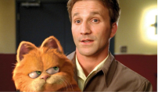
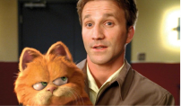

Garfield: Fora de casa
Em Garfield: Fora de Casa, o amado gato de estimação laranja (dublado por Chris Pratti) está de volta para mais uma aventura inesquecível; após reencontrar seu pai, o gato de rua Vic (dublado por Samuel L. Jackson), que não há via há muito tempo, Garfield e o cãozinho Odie acabam se envolvendo em um arriscado assalto.

ARLENE


 
